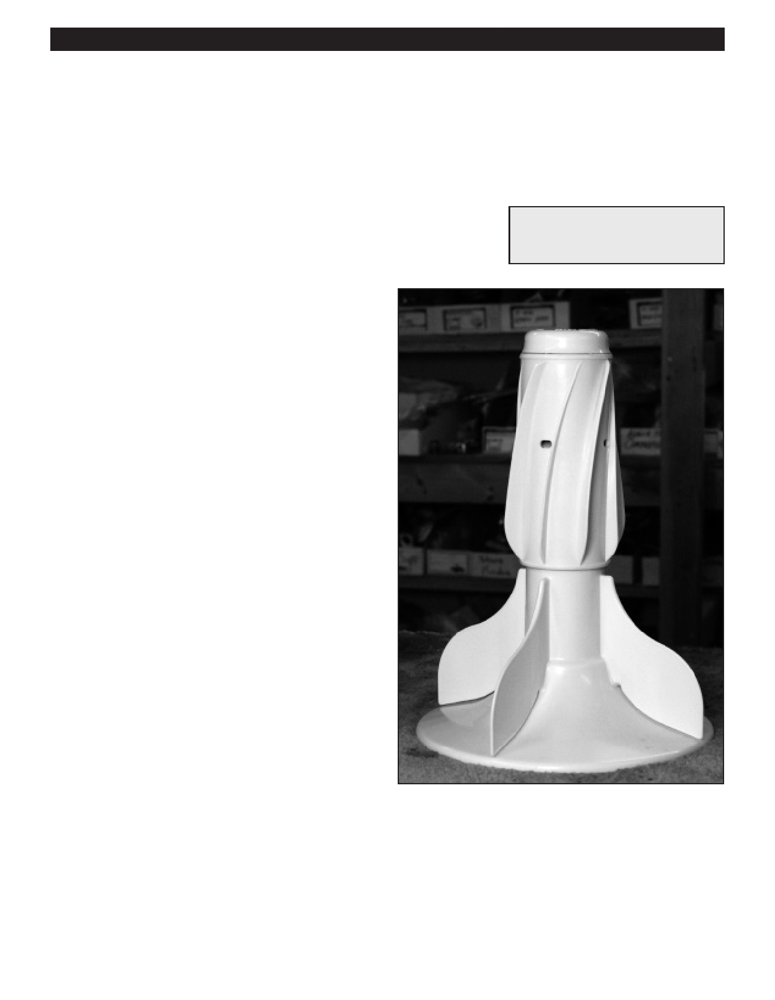

PA RT I C I PA N T R E S O U R C E G U I D E
Replace the Agitator
The agitator can tear laundry if the fins are cracked or broken. You may be able to solve
the problem temporarily by pinching off the splinters with pliers and lightly filing the
plastic smooth, but this is just a stopgap measure; the agitator should be replaced.
Tools and Materials Needed
Screwdriver
How-to Steps
1. Remove cap from agitator. Unscrew bolt or screw,
if necessary.
2. Pull up agitator. If stubborn, fill tub halfway with warm
water and rock side to side.
3. Replace agitator.
Notes:
38